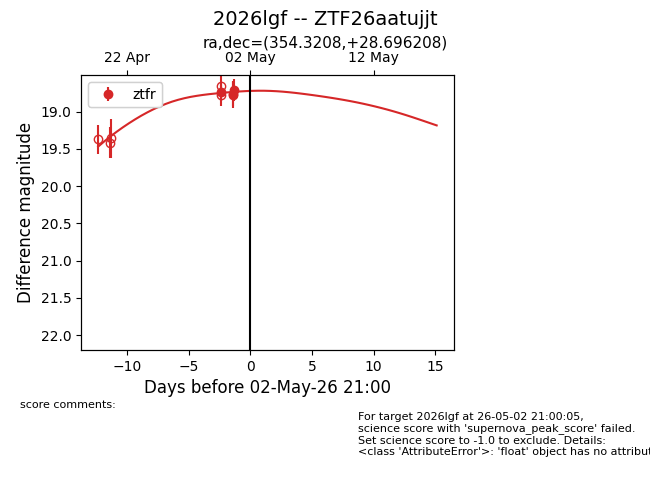
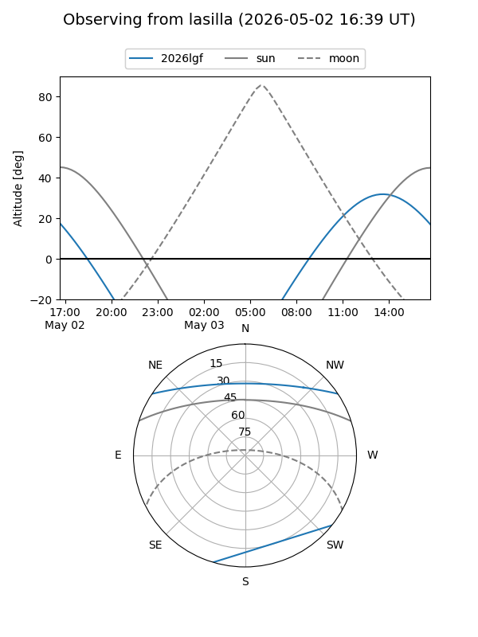
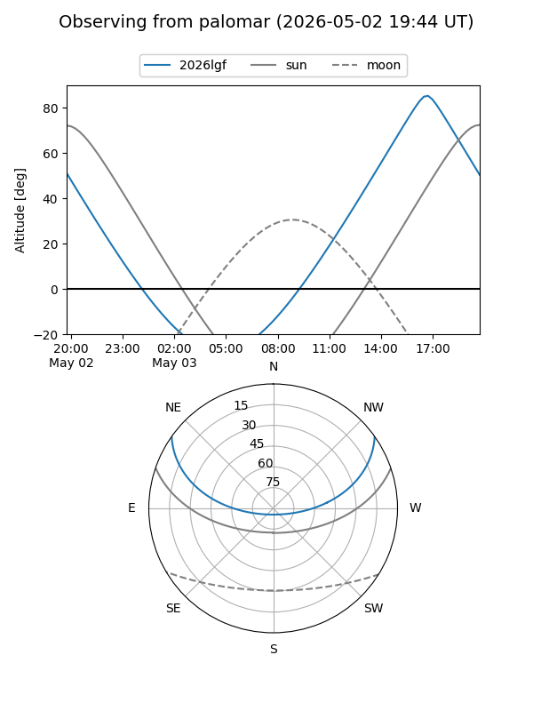

2026lgf
Target 2026lgf at 2026-05-02 21:13
Aliases and brokers:
FINK: link
Lasair: link
ALeRCE: link
TNS: link
YSE: link
alt names
ZTF26aatujjt (ztf,fink_ztf)
2026lgf (tns,yse)
Coordinates:
equatorial (ra, dec) = 354.3208,+28.69621
equatorial (HMS+DMS) = 23:37:16.98,+28:41:46.35
galactic (l, b) = (103.8575,-31.41413)
Flags:
Photometry:
last ztfr=18.71
4 ztfr detections
Lightcurve

Visibility


Additional plots